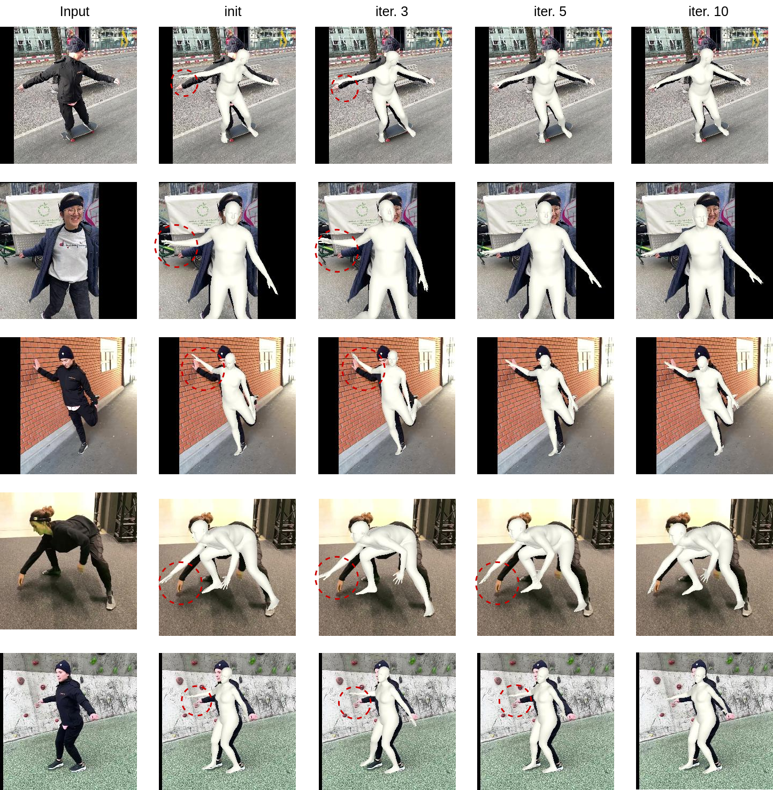

GenHMR: Generative Human Mesh Recovery
Muhammad Usama Saleem, Ekkasit Pinyoanuntapong, Pu Wang, Hongfei Xue, Srijan Das, Chen Chen†
The GenHMR demo highlights our method for achieving accurate 3D human mesh reconstructions from monocular images. Key to our approach is Uncertainty-Guided Sampling (UGS), which iteratively samples high-confidence pose tokens based on their probabilistic distributions, ensuring precise and reliable 3D reconstructions. Here, we show only the initial pose estimates from UGS for 5 iterations.
GenHMR Training Phase
GenHMR consists of two key components: (1) a Pose Tokenizer that encodes 3D human poses into a sequence of discrete tokens within a latent space, and (2) an Image-Conditioned Masked Transformer that models the probabilistic distributions of these tokens, conditioned on the input image and a partially masked token sequence.

Our Inference Strategy
Our inference strategy comprises two key stages: (1) Uncertainty-Guided Sampling, which iteratively samples high-confidence pose tokens based on their probabilistic distributions, and (2) 2D Pose-Guided Refinement, which fine-tunes the sampled pose tokens to further minimize 3D reconstruction uncertainty by ensuring consistency between the 3D body mesh and 2D pose estimates.

State-of-the-Art Comparison
State-of-the-art (SOTA) methods, such as HMR2.0 and TokenHMR, utilize vision transformers to recover 3D human meshes from single images. However, the limitations of these SOTA approaches, particularly in dealing with unusual poses or ambiguous situations, are evident in the errors marked by red circles. Our approach, GenHMR, addresses these challenges by explicitly modeling and mitigating uncertainties in the 2D-to-3D mapping process, leading to more accurate and robust 3D pose reconstructions in complex scenarios.

Qualitative Results on Challenging Poses
Qualitative results of our approach on challenging poses from the LSP dataset. Here, results are directly from Uncertainty-Guided Sampling (UGS).

2D Pose-Guided Refinement
The effect of 2D Pose-Guided Refinement on 3D pose reconstruction. The red circles highlight error-prone areas after each refinement iteration, demonstrating how the method progressively corrects these errors. By fine-tuning the pose tokens to better align the 3D pose with 2D detections, our approach iteratively reduces uncertainties and enhances accuracy. Notable improvements are observed in the early iterations, with most errors significantly reduced by the 10th iteration. The initial mesh is derived from uncertainty-guided sampling.
More Results on Challenging Pose
This figure showcases qualitative results of our GenHMR model on challenging poses. These results demonstrate the model's ability to accurately reconstruct complex 3D poses even in scenarios further highlighting the robustness and effectiveness of our approach.